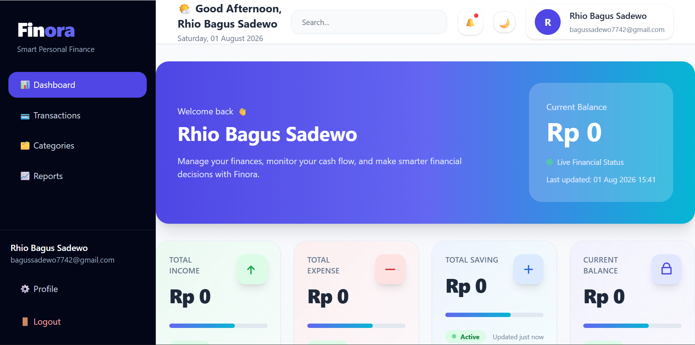
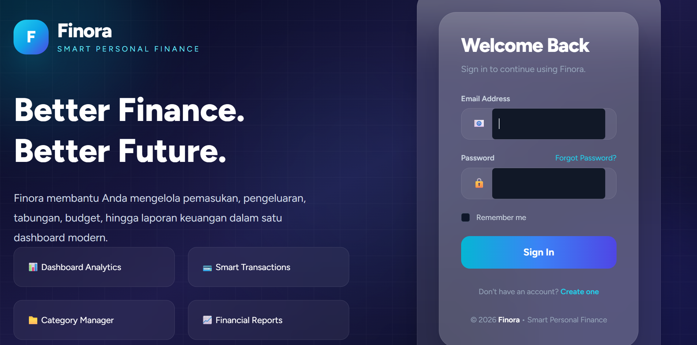
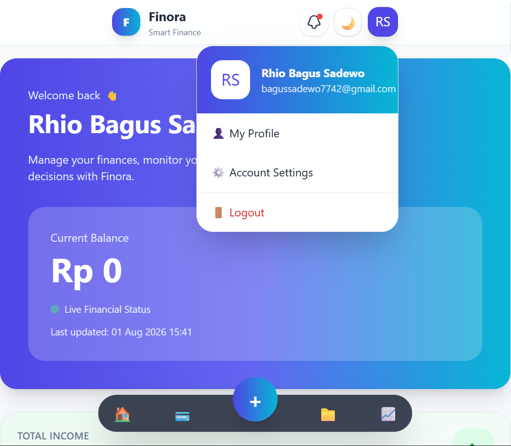

CASE STUDY / FINORA
A modern financial management platform designed to help users track, analyze and improve their spending habits.

Finora is a personal finance application that provides users with a centralized dashboard to manage transactions, monitor expenses and understand their financial behavior.
Backend Framework
Database
Design
Many people record their expenses without understanding their financial patterns. Traditional tracking methods often lack:
Users can quickly understand income, expense and saving trends.
Structured transaction management with category relationships.
Responsive UI focused on clarity and usability.


Designed scalable relationships between users, transactions, and categories.
Created modular Blade components to improve maintainability.
Finora became a complete personal finance management system with clean architecture, responsive design, and production-ready structure.
Back To Projects